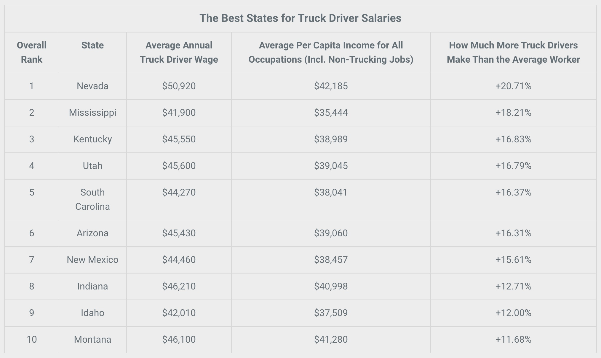
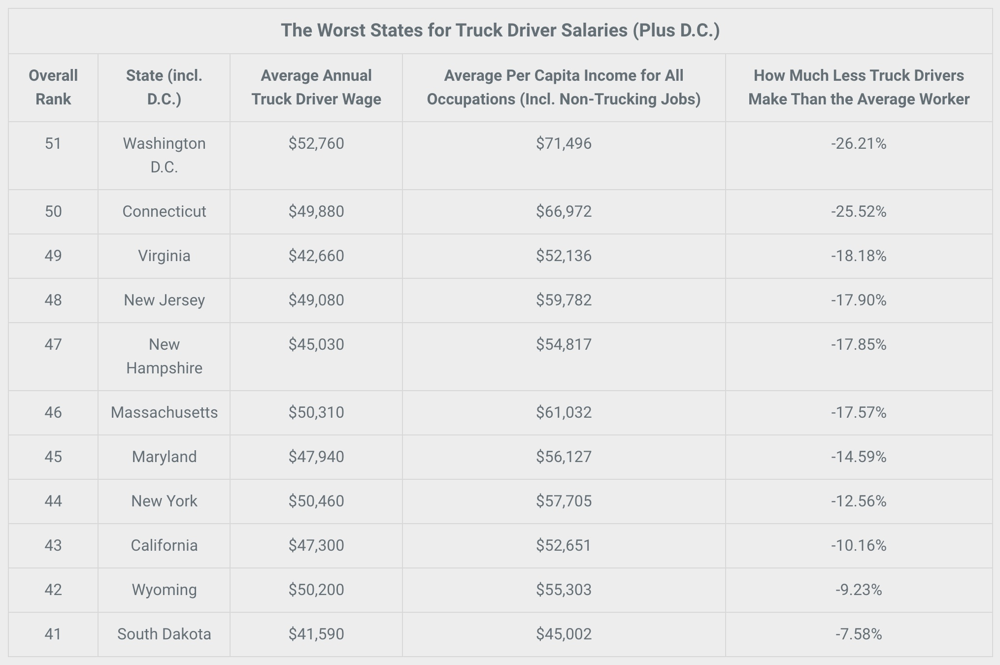

Are you thinking about becoming a professional truck driver? You probably asked yourself: how much can I make as a truck driver? Or will my trucker salary support my family? Is it possible to earn $100K a year driving trucks or will I earn a measly salary? What will road life be like…is it worth it?
90% of all the consumer products and food in the world are transported by a truck to their final destination; therefore, a truck driver is very much needed for the growth of an economy. The salary of a truck driver is dependent on various factors such as where they are based, the distance traveled, the size of the vehicle, the hiring company size, seniority, driver qualifications, working conditions, pay structure etc. This comprehensive guide analyzes what you can make as truck driver in North America and how you can increase your income.
Although you might not be able to make $100,000/year off the bat, but given the truck driver demand, and with experience, specialization, CDL training and the right company, you can make $80,000+ on a trucker salary.
How Much Do Truck Drivers Make a Year?
Truck driver salary varies from different factors: truck drivers’ experience, reputation, knowledge and much more. In 2018 according to Bureau of Labor, the average salary for truck drivers is $ $43,680. However, that doesn’t take into account drivers who might not work full-time or compare the differences between independent drivers and company drivers. Therefore, the scale can generally range as low as $28,160 annual income all the way to as high as $65,260, according to BLS.
According to the American Trucking Associations (ATA), the difference for America’s roughly 3.5 million truck drivers is that wages should remain steady for the anticipated future as the industry struggles with finding enough drivers to fill its orders, especially as many experienced drivers begin to retire.
Hourly Truck Driver Wage
If you’re a seasoned driver, you have earning potential you can earn as much as 60 cents per mile, according to TruckDriverSalary.com. Negotiating rates that are based around mileage (cents-per-mile) instead of hours can be a smart career move for drivers. With that in mind, a truck driver that has an average speed of 70 MPH can bring about $42 an hour. Unfortunately, unless you have been driving for a long time and have a great driving reputation, there’s not a lot of room for negotiating pay. You pretty much have to earn a lower rate until you are able to be experienced enough to “call the shots.” Plus, earning by mile might not always pay if there’s certain days where traffic or road conditions are unfavorable. These are all normal factors that play into the pay rates of truck driving.
Average Salary of Trucking Types of Jobs
- Class A: $49,000
- CDL Driver: $46,000
- Truck Driver Run OTR: $62,000
- OTR CDL Truck Driver: $57,500
- Dump Truck Driver: $39,000
- CDL Truck Driver: $51,500
- Tank Truck Driver: $59,500
- Bulk Truck Driver: $52,000
- Semi-Truck Driver: $49,000
- Tow Truck Driver: $35,000
- Commercial Truck Driver: $50,000
- Route Truck Driver: $37,500
The Best States for Truck Driver Salaries
How much a trucker actually makes will depend on how they’re paid. The vast majority of trucking companies pay their drivers by the mile rather than the hour, so a lot depends on how many miles you drive. Other factors include location and employer.
State salaries in the U.S. tend to be all over the map — literally. Even new drivers working for the same company can expect different pay rates based on where they live. In a new original study, Seek Business Capital examined average annual truck driver wage data from the BLS by state in relation to the average per capita income and the results show the profound effect location has on salary and could justify an interstate move for many truckers struggling to make ends meet.
Here are the 10 best states for truck drivers which also takes the state’s cost of living into account:
The Worst States for Truck Driver Salaries
Though not a state, the data for Washington D.C. is too compelling to ignore. Here are the 10 worst states, plus D.C., for truck driver states:
How to Bring Home 6 Figures as a Truck Driver
So, you’ve entered trucking with the intention of earning as much as $100,000 each year. How do you do it? Well, typically, earning that much in the profession is pretty uncommon. In fact, it can take 10 years of experience to start earning about $60k annually. However, it’s likely that drivers retire before they are able to reach that sought-after 6 figure salary.
In the realm of truck driving, here’s a couple of CRAZY ways you can earn over $100k annually:
- Ice Road Trucking: Ice road truckers are the highest paid in the specialty field with oversized load drivers and Hazmat haulers following closely behind. Due to the danger of the job and high risk, ice road truckers have the ability to earn an entire year’s salary in just a couple months’ time. These are the best of the best in the industry. Skill is required beyond anything else. Truckers have to know how to handle the elements and how to fix their trucks if they break down on a trip. Reportedly, a 3-month season can potentially have someone earning more than $120,000 a year.
- Oversized load drivers: Oversized load drivers definitely make a comfortable living. A high level of concentration and a great deal of patience is needed for this job. It takes a great deal of skill to keep a large road straight. Sharing the road with oncoming traffic is always a hazard for them. They travel with a team including a spotter so that their journey is safe from start to finish. But, if you’re not willing to put your butt on the line to earn that cash, how does a truck driver expect to bring home anywhere between $100,000 and $150,000?
- Owner-operators bring home about this much. However, the costs of maintaining that truck can be so high that after everything gets put into account for that—-you pretty much can cut that earning potential in half.
Where Does This Leave You?
If you’re unhappy with your current truck driver salary, or are considering a new career as a trucker, it’s important you do some research. While moving across state lines isn’t achievable for everyone, it could make a huge difference in how much you’re paid, as well as how far that money goes. Even if you can’t move, knowing where your state’s trucker salary stands in relation to others is key to understanding how well you’re compensated.